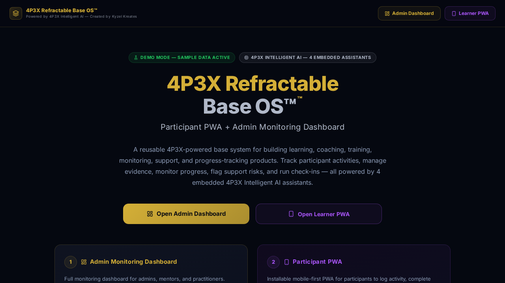

Demo Mode shows the product. Live Mode runs the product — once connected to a real backend, authentication, persistent records, and real-time sync.
What it is
The 4P3X Base Core is the reusable software architecture that powers the entire 4P3X Verse™ ecosystem. It is the foundation refactored into every other product — a shared dashboard and PWA shell, modular config system, data model patterns, AI guidance zones, demo/live mode switching, and backend-ready planning structure.
Where it can be used
Applicable across any sector that needs a dashboard, user-facing PWA, admin control panel, or AI-assisted workflow system. Healthcare, logistics, education, wellbeing, compliance, careers, and beyond.
Why it was built
Built to prove that one well-designed software base can become many different products through controlled refactoring — avoiding starting from zero each time and enabling rapid, safe product development.
When it is useful
When an organisation, product team, or individual needs to prototype, demonstrate, or launch a structured digital product quickly without a full custom build from scratch.
Who it helps
Founders, employers, investors, product teams, funders, and technical partners who want to see the architecture behind the 4P3X Verse™ before exploring specific sector products.
How it works
The base provides a shared PWA shell, configurable data model, admin/user split, demo mode with sample data, AI guidance integration points, and a deployment pathway to connect any backend provider.
Key features
Architecture behind it
This is Layer 1 of the 4P3X three-layer model. It sits beneath every product and provides the shared structure that controlled refactoring uses to transform into sector-specific solutions.
Demo Mode to Live Mode pathway
Demo Mode runs with sample data and no backend required. Live Mode activates by connecting Supabase, Firebase, REST, or another backend, enabling real users, persistent records, sync, and organisation-specific configuration.
What it can become next
Can become any product in the 4P3X Verse™ — or a new sector variant not yet built. The architecture is designed to fork safely into unlimited directions.
Investor and employer relevance
For investors and employers: this base demonstrates the creator's ability to design reusable, scalable software architecture rather than one-off solutions. It is the foundation of every product in this portfolio.